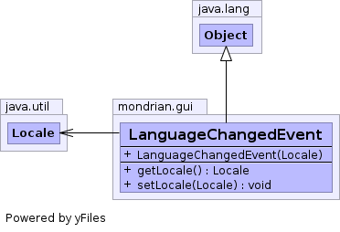

public class LanguageChangedEvent extends Object

LanguageChangedEvent(Locale locale)
Locale
getLocale()
void
setLocale(Locale locale)
clone, equals, finalize, getClass, hashCode, notify, notifyAll, toString, wait, wait, wait
public LanguageChangedEvent(Locale locale)
public Locale getLocale()
public void setLocale(Locale locale)
locale